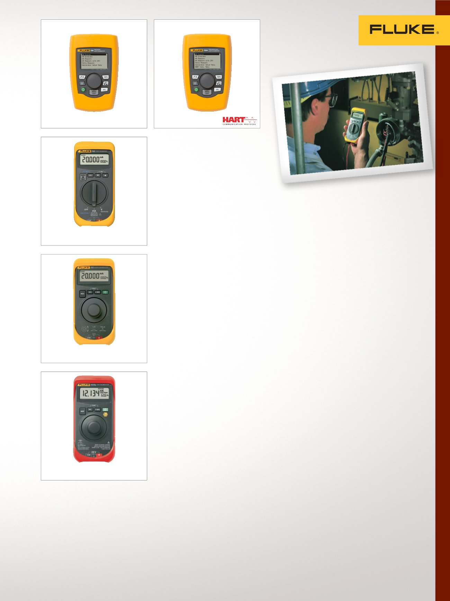

7
Étalonnage de boucle électrique, multifonction et mA
Étalonneurs de
boucle mA
Les étalonneurs de boucle
Fluke sont parfaits pour de
nombreuses applications
d'étalonnage allant de 4 à
20 mA.
Étalonneur de boucle 705
Solution économique intégrée pour
l'étalonnage, la réparation et la
maintenance de boucles de courant.
•
Source, simulation et mesure de mA
•
Affichage simultané de mA et %
de portée
•
Alimentation de boucle 24 V avec
mesure de mA
•
Mesure de 0 V CC à 28 V CC pour
vérifier la tension de boucle
•
Étalonnage identifiable NIST
Étalonneur de boucle 707
Solution hautes performances,
extrêmement rapide et facile d'emploi
pour l'étalonnage, la réparation et la
maintenance de boucles de courant.
•
Source, simulation et mesure de mA
•
Alimentation de boucle 24 V
avec mesure de mA, incluant une
résistance HART 250 Ω
•
Mesure de 0 V CC à 28 V CC pour
vérifier la tension de boucle
•
Étalonnage identifiable NIST
Étalonneur de boucle 707EX IS
Une option intrinsèquement sûre
pour zones à risque d'explosion —
certifié conformément à la directive
ATEX (Ex II 2 G Ex ia IIC T4) dans les
Zones 1 et 2.
•
Résolution de 1 µA pour la source,
simulation et mesure de mA
•
Mesure de V CC jusqu'à 28 V
•
Mode de démarrage par défaut
0-20 mA ou 4-20 mA
•
Une résistance compatible
HART
®
est connectée en série
à l'alimentation de boucle pour
assurer la compatibilité avec les
communicateurs HART
•
Étalonnage identifiable NIST
707
709
705
Étalonneur de boucle de
précision 709
Réduit le temps nécessaire pour
mesurer ou produire de la tension
ou du courant et créer une boucle.
•
Relevé ultra précis de 0,01 %
•
Appareil petit et robuste fonction-
nant avec six piles AAA standard
•
Interface utilisateur intuitive avec
des boutons de configuration
rapide, faciles d'utilisation
•
Résistance intégrée de
250 Ω paramétrable pour la
communication HART
•
Alimentation en boucle 24 VCC
avec mode de mesure mA
(-25 % à 125 %)
•
Résolution de 1 µA sur les plages
mA et de 1 mV sur les plages
de tension
•
Étalonnage identifiable NIST
Étalonneur de boucle de
précision 709H avec commu-
nications et diagnostics HART
Conçu pour gagner du temps et pro-
duire des résultats de grande qualité
•
Communication HART intégrée
pour faciliter l'entretien du
dispositif HART
•
Relevé ultra précis de 0,01 %
•
Appareil petit et robuste fonction-
nant avec six piles AAA standard
•
Interface utilisateur intuitive avec
des boutons de configuration
rapide, faciles d'utilisation
•
Résistance intégrée de
250 Ω paramétrable pour la
communication HART
•
Alimentation en boucle 24 VCC
avec mode de mesure mA
(-25 % à 125 %)
•
Résolution de 1 µA sur les plages
mA et de 1 mV sur les plages
de tension
•
Étalonnage identifiable NIST
707Ex
709H